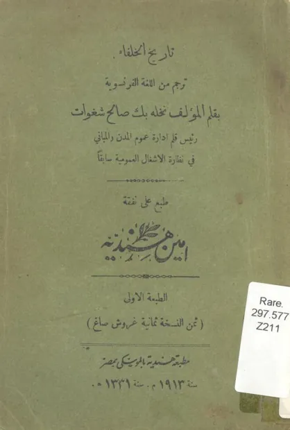

تاريخ الخلفاء
Tarikh al-Khulafa'
Baca Tarikh al-Khulafa' (تاريخ الخلفاء) karya Imam as-Suyuti secara gratis di Maktabah Ilmu: teks Arab, Indonesia (sebagian terjemah dibuat AI). Tanpa daftar, tanpa iklan.
Buka kitab iniLihat lemari ilmuDaftar isi
- خطبة المؤلف وفيها بيان الداعي إل تأليف الكتاب
- فصل: في بيان كونه صلى الله عليه وسلم لم يستخلف وسر ذلك
- فصل: في بيان أن الأئمة من قريش والخلافة فيهم
- فصل: في مدة الخلافة في الإسلام
- فصل: في الأحاديث المنذرة بخلافة بني أمية
- فصل: في الأحاديث المبشرة بخلافة بني العباس
- فصل
- فصل: في شأن البردة النبوية التي تداولها الخلفاء إلى آخر وقت
- فصل: في فوائد منثورة تقع في التراجم ولكن ذكرها في موضع واحد أنسب وأفيد
- فوائد
- الخليفة الأول: ابو بكر الصديق رضي الله عنه (1)
- الخليفة الأول: ابو بكر الصديق رضي الله عنه (2)
- الخليفة الثاني: عمر بن الخطاب رضي الله عنه
- الخليفة الثالث: عثمان بن عفان رضي الله عنه
- الخليفة الرابع: علي بن أبي طالب رضي الله عنه
- الحسن بن علي بن أبي طالب رضي الله عنه1
- معاوية بن أبي سفيان رضي الله عنه
- يزيد بن معاوية أبو خالد الأموي
- معاوية بن يزيد
- عبد الله بن الزبير
- عبد الملك بن مروان
- الوليد بن عبد الملك
- سليمان بن عبد الملك
- سليمان بن عبد الملك
- عمر بن عبد العزيز رضي الله عنه
- يزيد بن عبد الملك بن مروان
- هشام بن عبد الملك
- الوليد بن يزيد بن عبد الملك
- يزيد الناقص أبو خالد بن الوليد
- إبراهيم بن الوليد بن عبد الملك
- مروان الحمار
- السفاح أول خلفاء بني العباس
- المنصور أبو جعفر عبد الله
- المهدي: أبو عبد الله محمد بن المنصور
- الهادي أبو محمد، موسى بن المهدي
- الرشيد هارون أبو جعفر
- الأمين محمد، أبو عبد الله
- المأمون عبد الله أبو العباس
- المعتصم بالله أبو إسحاق محمد بن الرشيد
- الواثق بالله هارون
- المتوكل على الله جعفر
- المنتصر بالله محمد أبو جعفر
- المستعين بالله أبو العباس
- المعتز بالله محمد
- المهتدي بالله محمد بن الواثق
- المعتمد على الله أبو العباس
- المعتضد بالله أحمد
- المكتفي بالله أبو محمد
- المقتدر بالله أبو الفضل
- القاهر بالله أبو منصور
- الراضي بالله أبو العباس
- المتقي لله أبو إسحاق
- المستكفي بالله أبو القاسم
- المطيع لله أبو القاسم
- الطائع لله أبو بكر
- القادر بالله أبو العباس
- القائم بأمر الله أبو جعفر
- المقتدي بأمر الله أبو القاسم
- المستظهر بالله أبو العباس
- المسترشد بالله أبو منصور
… dan 29 bab lainnya.